Make & use उपयोग
What grows and lives here can be eaten, woven, burnt, washed with, built with, or left to do its work in the field. 317 of 462 species carry at least one documented use, each labelled in its profile as traditional, current practice or a research lead. Nothing here is medical advice, and a toxic or protected species says so before any use is described.
जो यहाँ उगता और रहता है, उससे खाना, रस्सी, टोकरी, ईंधन, साबुन, खाद और इमारत बनती रही है। हर उपयोग प्रोफ़ाइल में परंपरा, आज का चलन या शोध की दिशा के रूप में दर्ज है। यह चिकित्सा सलाह नहीं है।
Guides मार्गदर्शिकाएँ
Longer pieces, written from the sources, that a self-help group could act on.
Browse by use उपयोग से देखें
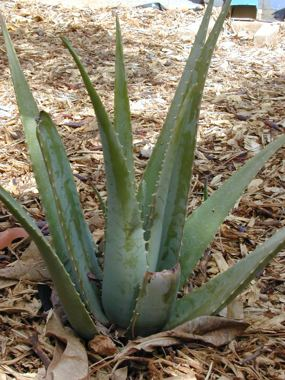
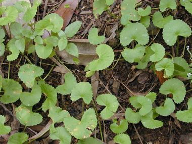
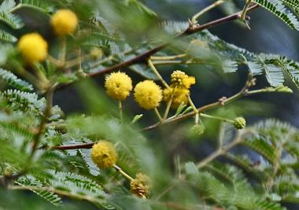
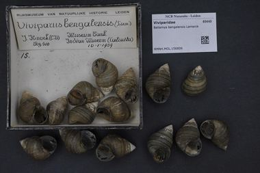
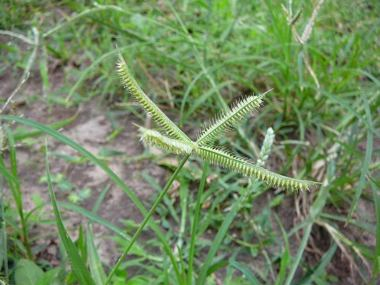

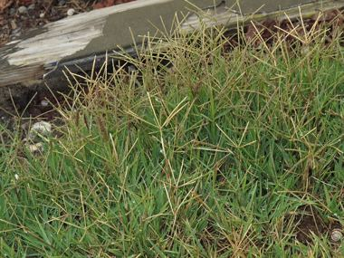
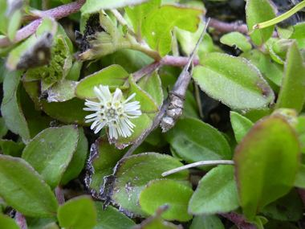
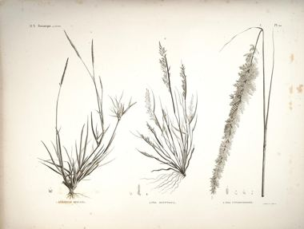
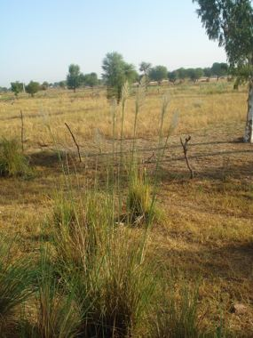
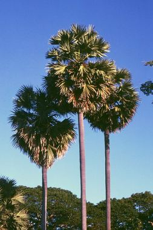
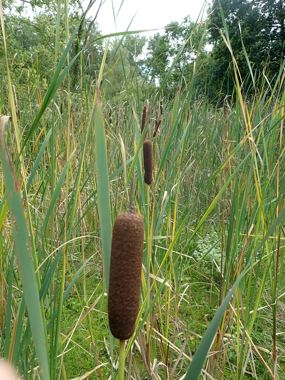
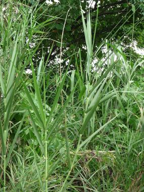
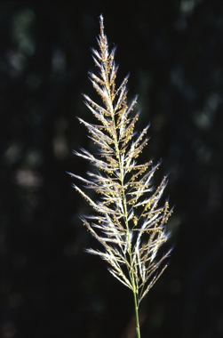
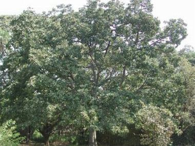

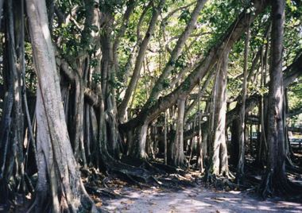

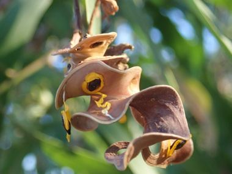
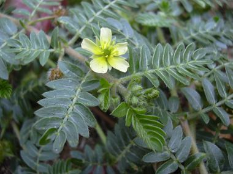
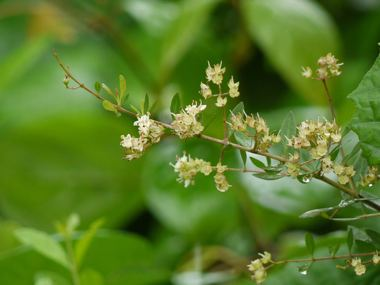
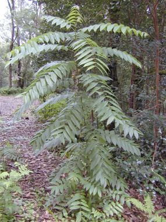
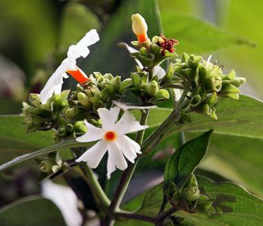
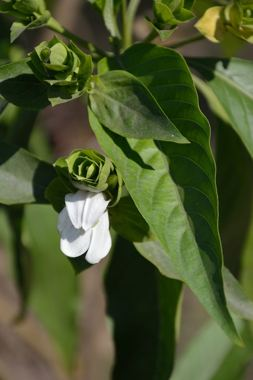
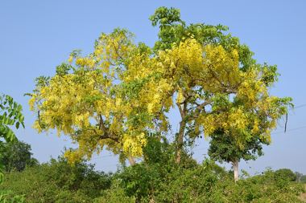
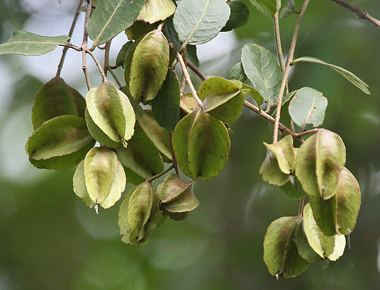

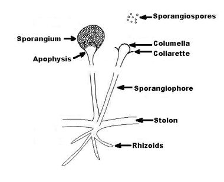
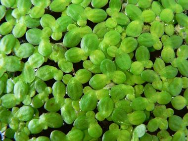

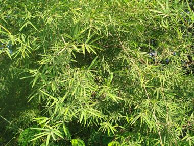
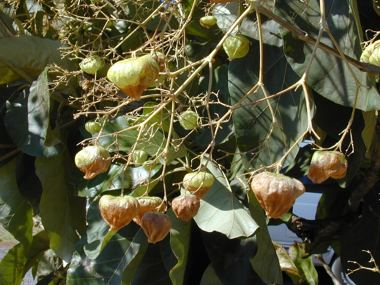
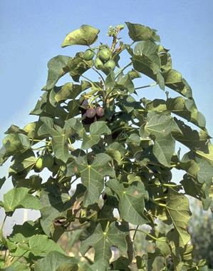
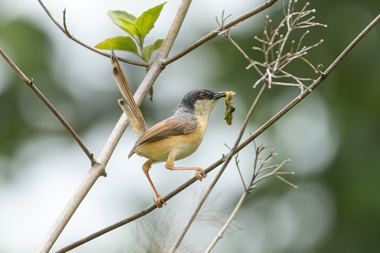


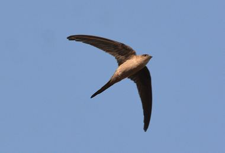
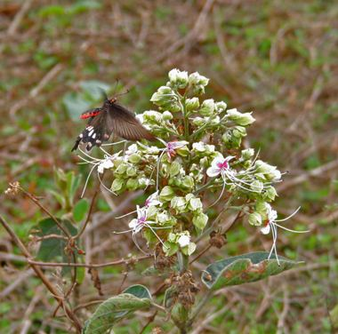

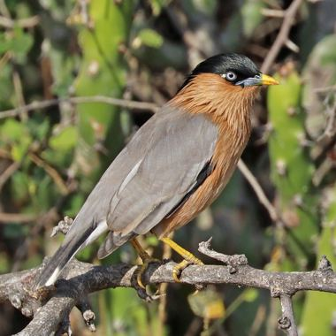
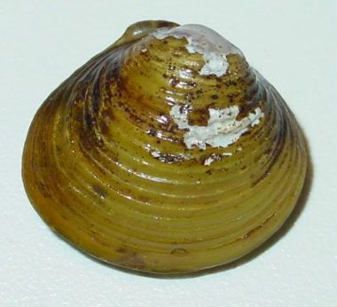
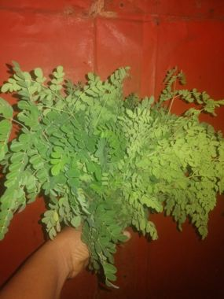

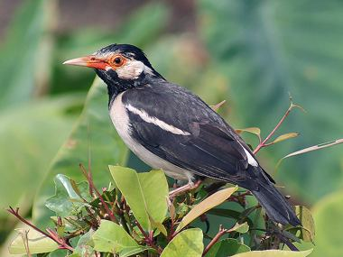
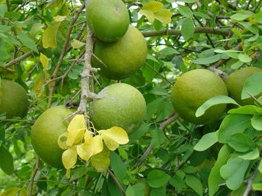
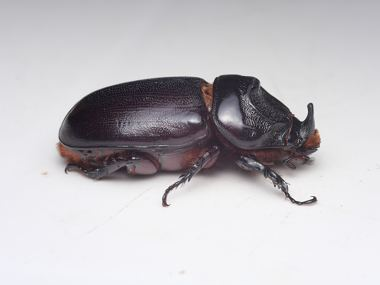

Cautions सावधानियाँ
Shown on every card and page where they apply, before any use is described.
- Toxic ज़हरीला — Some part is poisonous to people or livestock. Read the profile before any use. 22 species
- Venomous विषैला — Its bite or sting needs medical attention. 6 species
- Protected by law कानूनी संरक्षण — Listed under the Wildlife (Protection) Act 1972; hunting, keeping or trading it is an offence. 82 species
- Invasive आक्रामक — Spreads at the expense of native species. Do not plant or spread it. 32 species
- Carries disease रोग वाहक — A vector or host of human disease. 10 species